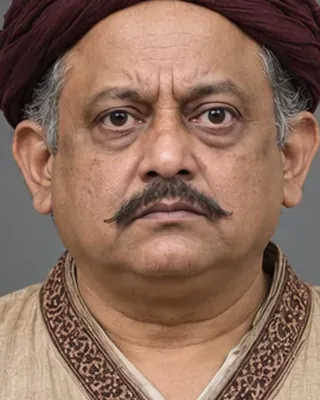

Manthir Bharali Barua (Parbatia Phukan)
mid-17th century · Viceroy of western Assam

A Kayastha viceroy of western Assam whose appointment caused resentment among Ahom nobles.
Record confidence: low.
mid-17th century · Viceroy of western Assam

A Kayastha viceroy of western Assam whose appointment caused resentment among Ahom nobles.
Record confidence: low.